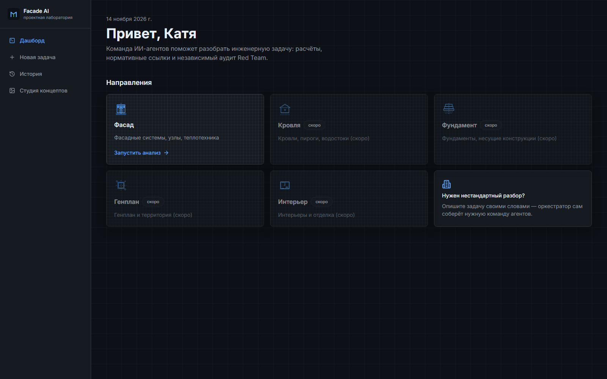
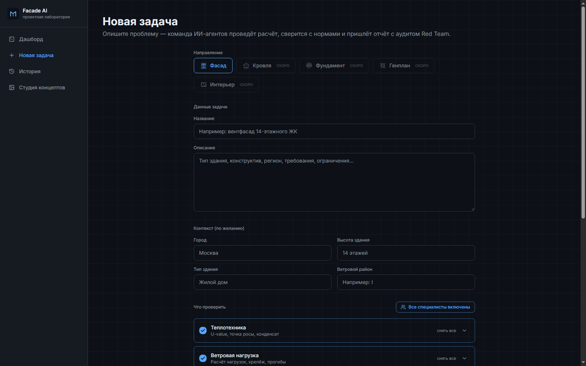
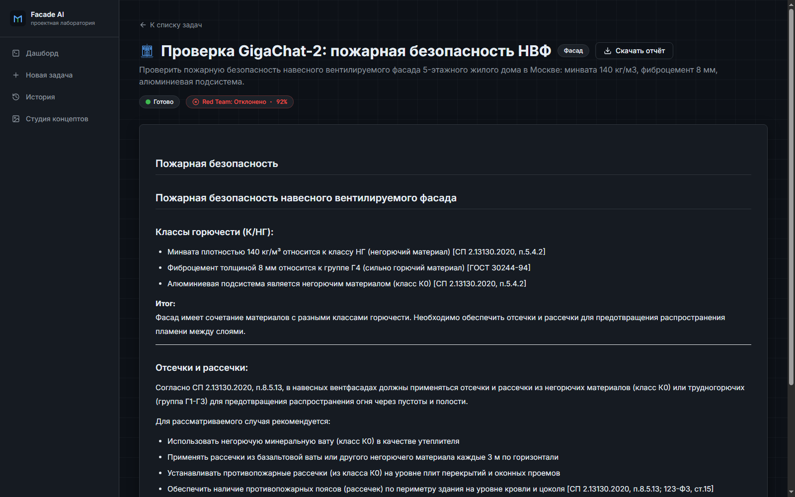
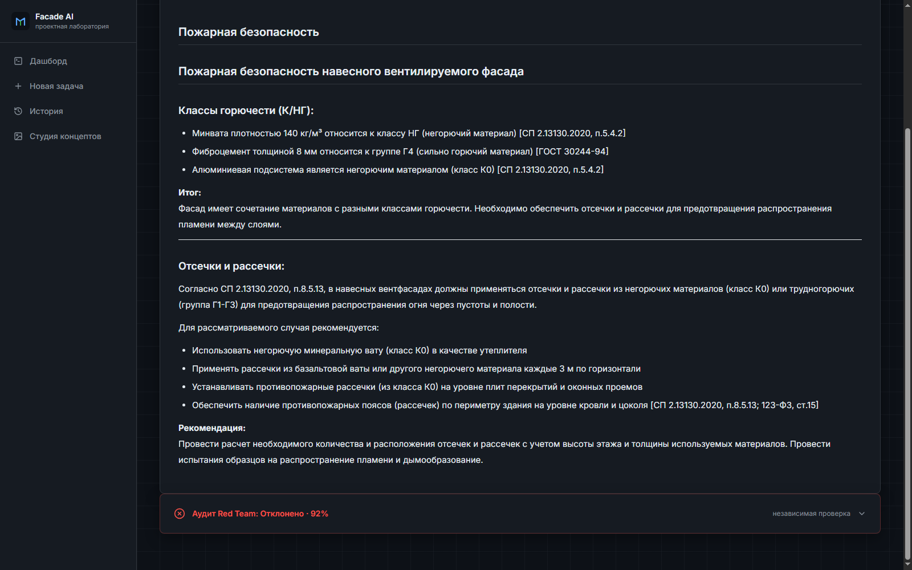
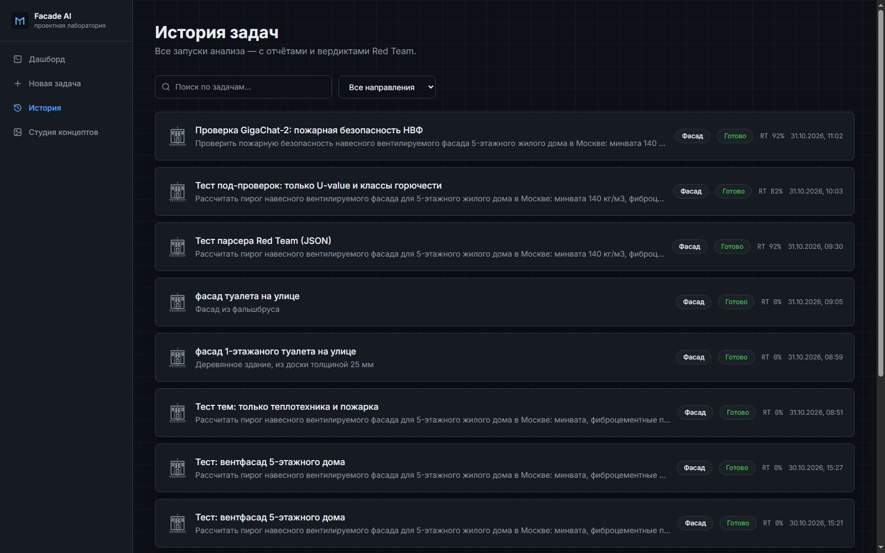
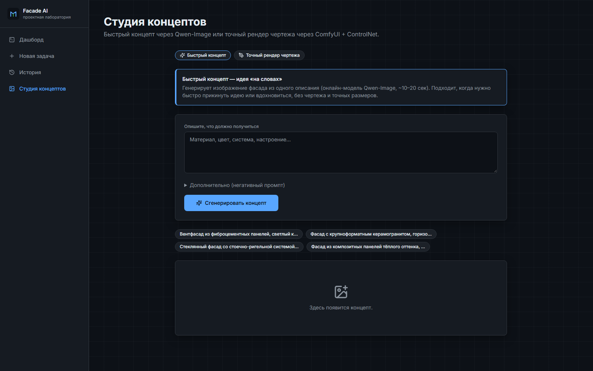
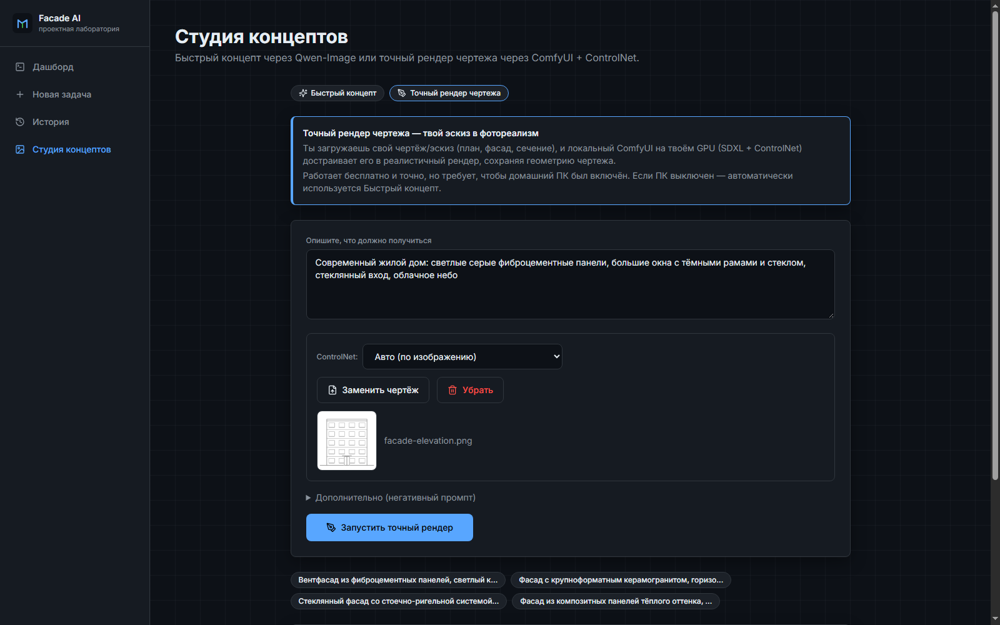
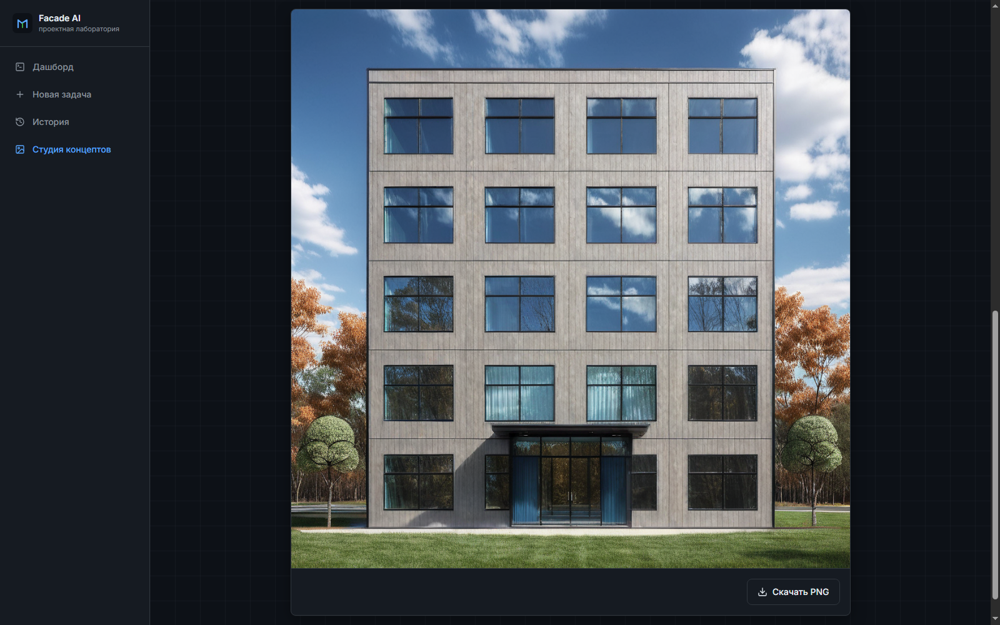
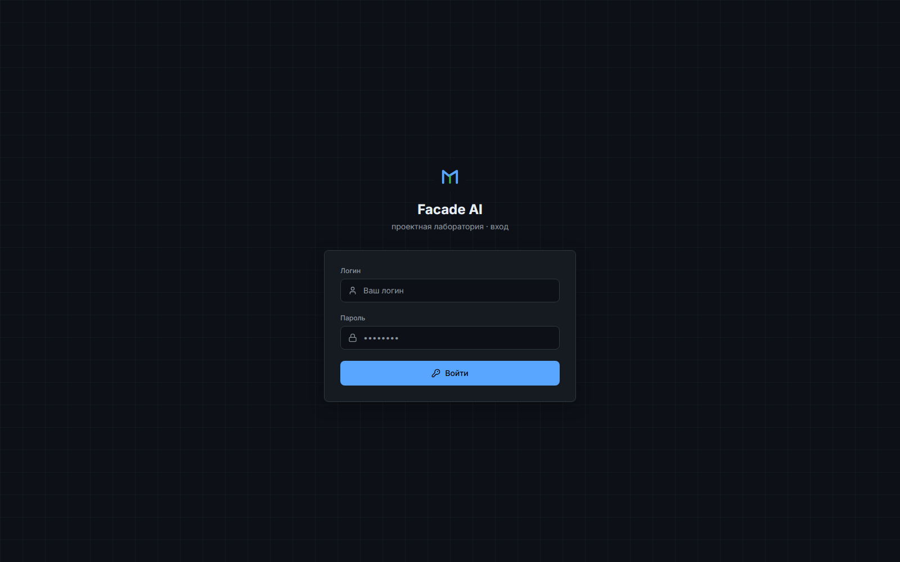

Бизнес-проблема
Навесной вентфасад — это одновременно теплотехника, ветровые нагрузки, пожарная безопасность, совместимость материалов и смета. Архитектор проверяет всё руками по нескольким документам СП/ГОСТ, и на разбор одного узла уходят часы. Обычные чат-боты задачу не решают:
- Галлюцинации: модель уверенно выдумывает пункты норм и значения
- Нет ссылок: ответ без указания документа нельзя показать заказчику
- Одна тема за раз: приходится самому декомпозировать задачу по дисциплинам
- Визуализация отдельно: концепт и рендер чертежа — снова ручная работа
Как проходит задача
Пользователь выбирает направление, описывает здание и отмечает темы экспертиз — вплоть до отдельных под-проверок (например, только U-value и классы горючести). Дальнейший конвейер виден в реальном времени по WebSocket:
- В очереди → Проверка данных — валидация входных параметров
- Работают агенты — оркестратор собирает команду специалистов по выбранным темам
- Синтез отчёта — единый markdown-документ со ссылками на пункты
- Аудит Red Team — независимая проверка с вердиктом и процентом
- Нормоконтроль → Готово — отчёт можно скачать
Пример из прод-истории: проверка пожарной безопасности навесного вентфасада 5-этажного дома — минвата 140 кг/м³ (класс НГ, СП 2.13130.2020 п.5.4.2), фиброцемент 8 мм (группа Г4, ГОСТ 30244-94), требования к отсечкам и рассечкам с ссылкой на п.8.5.13 и 123-ФЗ. Red Team: «Отклонено · 92%» — система не прячет слабые места расчёта, а подсвечивает их.
Команда агентов
Десять ролей, каждая — персона-промпт (.md) + методику-скилл + доступ к нормативной базе:
- Оркестратор (ведущий архитектор фасадов) — декомпозиция и сборка команды
- Физик building-оболочки — U-value, точка росы, тепловые мосты
- Конструктор — ветровые нагрузки, подсистема, прогибы
- Пожарный эксперт — классы горючести, отсечки, высоты, ФЗ-123
- Материаловед — совместимость, гальваническая коррозия, долговечность
- Эколог — embodied carbon, EPD, сертификация
- Сметчик и дизайн-интегратор — экономика и визуальные концепты
- Red Team — независимый аудит с JSON-вердиктом
- Code Checker — нормоконтроль
Нормативная база: RAG вместо выдуманных пунктов
Ключевое отличие от «просто чата с GPT»: перед каждым ответом агент получает релевантные выдержки из настоящих СП и ГОСТ.
- Корпус: 8 документов (СП 50.13330, СП 2.13130, ГОСТ 30244 и др.) → 2 519 чанков
- Чанкинг по пунктам (≤900 знаков, склейка коротких хвостов) — выдержка = цитируемый пункт
- Эмбеддинги локально: multilingual-e5-large (1024 М) на домашнем ПК — бесплатно и без квот облачных API
- Хранение: pgvector + HNSW (cosine), поиск top-5 с фильтром по специализации агента
- В промпт выдержки попадают секцией «НОРМАТИВНАЯ БАЗА» с требованием указывать источник; нет данных — агент обязан сказать это явно
- Graceful degradation: embedding-сервер выключен — агенты работают без выдержек, задача не падает
Студия концептов: два режима генерации
- Быстрый концепт — Qwen-Image по текстовому описанию, 10–20 секунд: прикинуть идею, подобрать материал и цвет
- Точный рендер чертежа — загруженный эскиз/чертёж через ComfyUI + ControlNet (RealVisXL V4) на домашнем GPU: геометрия чертежа сохраняется, получается фотореалистичный фасад
- Авто-выбор ControlNet: по доле белого в изображении — линейный чертёж → canny, заполненная 3D-схема → depth; композитный чекбокс блокирует запуск без чертежа
- Приватный канал: ComfyUI доступен backend только через Tailscale — домашний GPU работает на прод, порты в интернет не торчат
Red Team: аудит, который имеет право сказать «нет»
После синтеза отчёта независимый агент-оппонент проверяет расчёты, ссылки и логику. Ответ — строгий JSON: вердикт (APPROVED/REJECTED), score, список замечаний. В истории есть и «Отклонено · 92%» — это осознанное решение: заказчику нужен честный аудит, а не льстивый ассистент. Парсер вердикта покрыт тестами, JSON-контракт фиксируется в temperature 0.2.
Архитектура
Backend — FastAPI (uvicorn, 2 воркера) + 4 Celery-воркера и beat; фронтенд — SPA на nginx; всё на одном VPS, доступ к интерфейсу — только по логину (закрытый проект).
Скриншоты
Интерфейс рабочего прода. Нажмите на скриншот, чтобы увеличить.









Инфраструктура и надёжность
- 15 сервисов в Docker Compose за Traefik v3: backend, 4 Celery-воркера + beat, Flower, Postgres 16 с pgvector, Redis, frontend nginx, Prometheus, Grafana
- Model Router с фоллбэками: цепочки провайдеров под тип задачи; при отказе GigaChat — Qwen; при отказе ComfyUI — Qwen-Image
- Секреты — только env-переменные, никаких ключей в коде и репозитории
- Кэш фронтенда: index.html с no-store — обновления доходят сразу, статика — 30 дней
- Наблюдаемость: Prometheus + Grafana, логи токенов и стоимости каждого агентного вызова
- Приватный GPU-хост: Tailscale между VPS и домашним ПК — ComfyUI и embedding-сервер не светятся наружу
- Тесты: 28 автотестов backend (роутер, RAG, интеграция RAG в агентов) — все зелёные
Результаты
Закрытый проект — покажу демо по запросу
Доступ к прода только по логину (проект для конкретного архитектора). Напишите — покажу живой прогон задачи: от выбора тем до отчёта с вердиктом Red Team и рендера чертежа.
Запросить демо Написать в Telegram